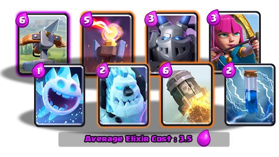
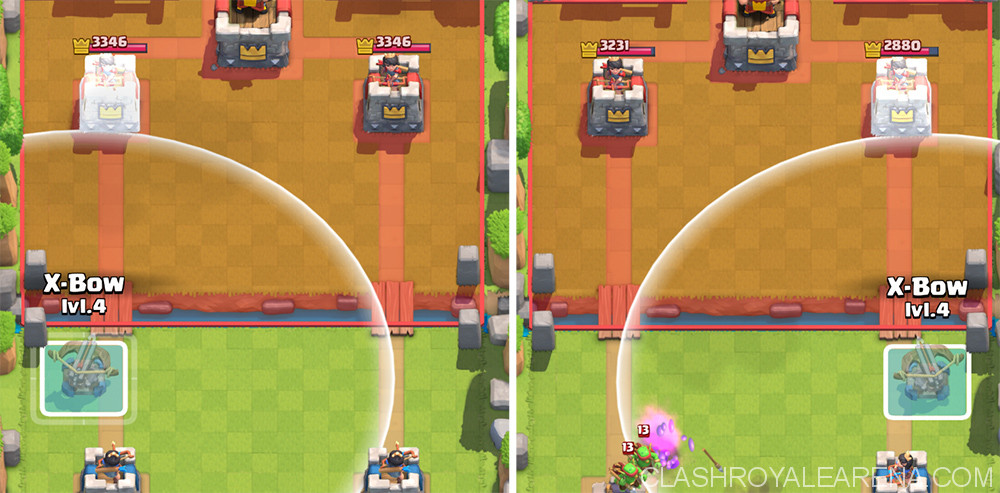

Now, since you clicked the link to this page, I need to show some good decks used in ledgendary arena. These decks bellow are decks I am using in ledgendary arena. Feel free to use it, or modify it so it fits your style. These decks are decks in the 1.70 version.

Do you think im crazy showing you guys a trolly x-bow deck in the begening of this post? Well, first of all, this deck is not a troll deck, it is a push deck. Second, I am actually a siege player.(My next deck archtype I like is beatdown decks), and lastly, this deck is AMAZING. You could try this deck if you are tired of playing the Hog Rider, Giant, and Golem decks. So lets go to the explanation.

This is how you place your x-bow. This is optimal for a few reasons.
Never play your X-Bow until you have secured an elixir advantage/strong counter push. What I mean by strong counter push is that even though you might be at the same amount of elixir as your opponent, you could still have more troops in play, which technically means you are ahead.
Generally, you never want to play your X-Bow on its own. Make sure you have a Mega Minion or Ice Golem coming up behind it before you play it.
The Deck’s main defense against tanks is the inferno tower. A lot of times your opponent will play a zap to reset the inferno, allowing your skarmy to be played. Against a lone hog try and play megaminion and ice spirit if you can, because playing the inferno will mean that you will lose 1 elixir.
The X-Bow is mainly a 1 crown win deck. Get a second crown when it is a 1 vs 1 match or when you have a chance to get the second one.
A tip that people rarely give, is to try and play the X-Bow on the same side that your opponent is pushing on. Not only does it allow for easier counter pushing, there’s also another reason. Imagine you and your opponent traded towers on different sides i.e. my left tower and his left tower. This almost means that you will never be able to take your opponents second crown tower. Because there is so much space, your opponent can now directly spawn troops ON TOP of the X-Bow, making it very difficult to defend it.
When you are winning by 1 tower and there’s less than 1 minute left it is often a good choice to play the X-Bow in in the middle for defense! I call that turtling. The X-Bow has so much health and it’s range can kill troops at a distance, so it can definitely be a good idea!
Giant
This bad boy has lots of HP, a Giant can definitely tank X-Bow shots and kill the X-Bow. There’s a couple of different ways you can approach it.
Hog
Same as above
Royal Giant
Similar to the giant but its range is too big for you to counter with Inferno or Skeleton Army, so I guess waiting for your opponent to use it on offense is your best bet.
Baloon
It is very hard to stop a Balloon, the Inferno placed above the tower can attract the Balloon, use combinations like Mega Minion and Ice Spirit to take it out.
Elite Barbarians
One of the reasons the X-Bow’s popularity has decreased is because of this very strong and fast card, that can shred the X-Bow very quickly.
Rocket/lightning
The worst counter to meet in the game. All the opponent have to do is place a small tank to soak up a few X-Bow shots then Rocket. The only way to beat this is to out cycle their X-Bow, which is pretty difficult if you are playing someone good. So if matched up against Rocket you pretty much have to play for a draw.
If you want to learn more about clash royal decks:
Click Here to go back to the decks page
Click Here to check out my second ledgendary deck, the poison graveyard deck.
Click Here to learn how to build a well ballanced deck.
Click Here to learn more about deck archtypes